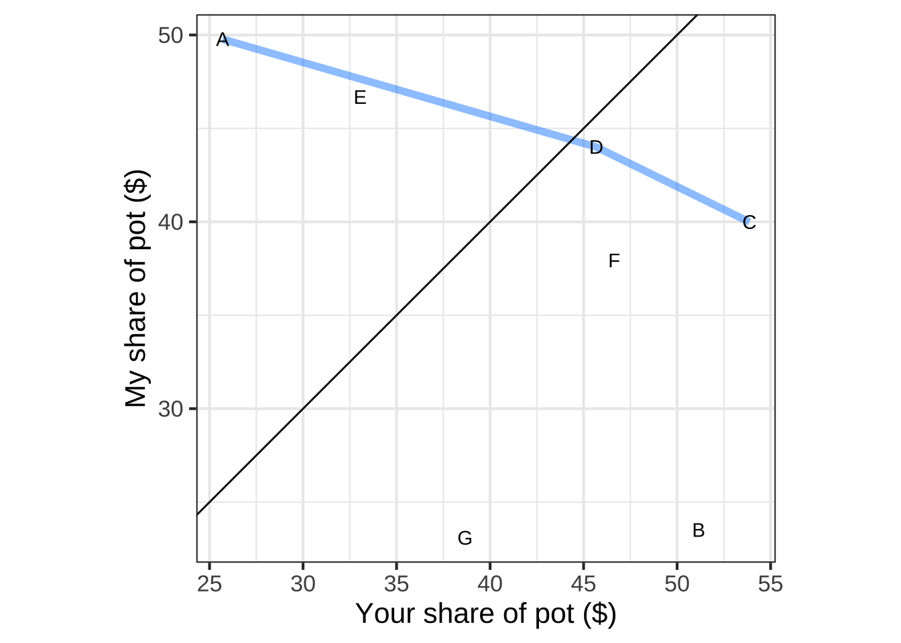
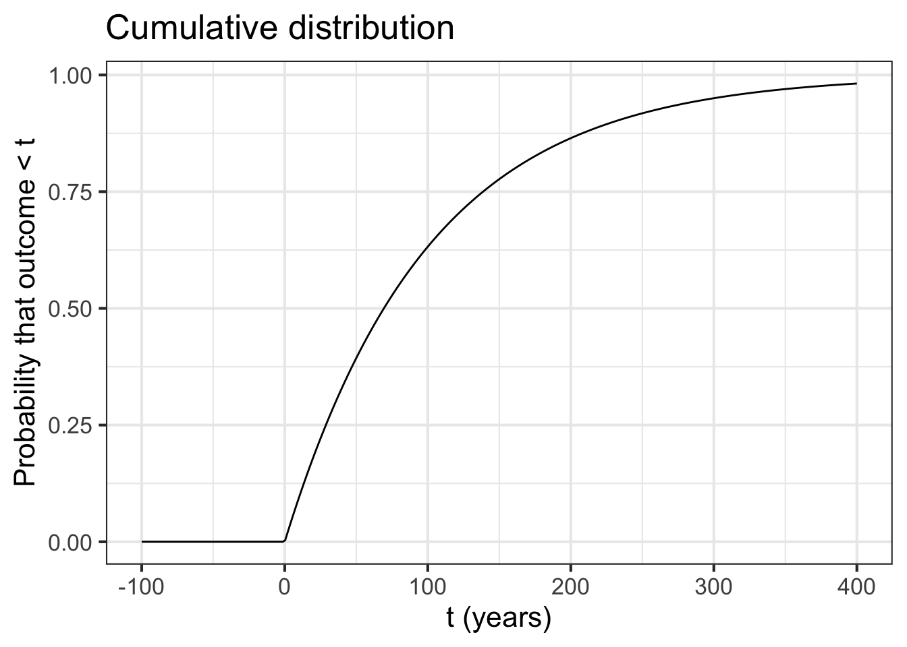

Chapter 37 Probability
37.1 Uncertainty and risk
Uncertainty is a familiar element of human affairs. We often have views about what is likely to happen and what is possible but unlikely, but we don’t know for certain. Risk is the exposure to harm or danger if things don’t turn out the way we would like. Our generally negative view of the uncertain is revealed by the lack of a positive equivalent to risk: what we might gain if things don’t turn out the way we expect. This chapter is about the quantification of uncertainty, risk, and gain.
To many people, quantifying the uncertain is a contradiction in terms. Numbers are certain, definite, and behave reliably, so how can we assign a number to uncertainty? Yet doing so has become one of the standard tools of decision-making in the modern era, an essential component of the extraction of information from data, and even an irreducible part of the description of motion at the quantum scale of atoms, electrons, photons and the other wave/particles of modern physics.
Quantifying uncertainty has much in common with the 17th-century problems of quantifying motion that inspired calculus. The mathematical study of uncertainty has its roots in the same enlightenment era as calculus, the foundations being laid in the work of Blaise Pascal (1623–1662) a near contemporary of Leibniz and Newton.
Whereas the motivation for calculus was physical movement, the mathematical study of uncertainty was grounded originally in games of chance: gambling. But just as calculus soon became relevant to all sorts of non-physics problems, the recognition that uncertainty is susceptible to calculation quickly expanded beyond the gambling den and is now the basis for medical decision making, finance, and statistics.
37.2 Quantifying uncertainty
Note: This section introduces some new technical words, such as “probability,” “variance,” “state space,” and “cumulative” that are broadly important in quantitative work but not traditionally considered part of calculus. Try to understand what these words mean. That will help you in your later studies in downstream courses.  4520
4520
Uncertainty is the state of being unreliable or undetermined. Probability is—in modern usage—a way of quantifying uncertainty, of putting uncertainty on a scale. Before the modern era, probability was a kind of opposite to uncertainty, a state of being reliable or determined. This almost complete reversal of the definition of probability reflects the difficulty untrained people have in doing probability calculations correctly. 4525
In the abstract mathematical formulation of probability, central components are the “event” and the “state space.” An event is something that happens, think of one flip of a coin as an event, or one frame in bowling, or the wind speed at a particular instant. The state space is the set of all possible outcomes of an event. The state space of a coin flip is famously heads or tails. The state space of a frame in bowling is the numbers 0 through 10 reflecting the number of pins bowled over. (We’re ignoring “strikes” here.) The state space of wind speed is a non-negative number as might be read off of an anemometer. 4530
A probability is a number assigned to an element of a state space. For instance, in a coin flip, the number 1/2 is conventionally assigned to each of the possible outcomes: heads or tails. There are two essential properties that these assigned numbers must have to be valid probabilities: 4535
- the number must be between zero and one (inclusive). You can’t have a probability of -0.2 or 13.
- added up across all the elements of a state space, the probability numbers must sum to 1.
The probability number 0 is assigned to elements of the state space that need not have been listed in the first place, because they cannot happen.
The probability number 1 is assigned to a single element of the state space that is inevitable.
Other than the possibly unfamiliar formal vocabulary used in the preceding, the statements (1) and (2) are intuitive to many people. What might calculus have to contribute?
This course being calculus, we are concerned particularly with quantities that are continuous, e.g. the location of a point on the number line, the weight of a bucket after it’s been rained on, etc. For a continuous quantity, the state space will be the number line \(-\infty < x < \infty\) or some finite segments of the number line, e.g. \(0 \leq x \leq 1\). Either way, the state space consists of an infinite number of possible values. For example, one member of the \(0 \leq x \leq 1\) state space is 0.963012894848362656100076390430914821056649089340673461090773. Another is 0.4204042488709096655207811854786639390334021305202371464110919373058862984183853728834073997986972243. Still others are \(1/\sqrt{2}\) and \(1/\pi\) and \(1/e\) and on and on without end. 4540
To get started with , use a SANDBOX to run the R command shown below:
n <- 5
runif(n)
runif(n) == 0.3
sum(runif(n) == 0.3)The first line is merely setting up the next three lines, giving a small integer value to n. The command runif(n) then generates n random numbers, each guaranteed to be between 0 and 1. The third line, runif(n) == 0.3 generates more random numbers, but rather than printing them out first checks to see if any of them are equal to 0.3. The answer FALSE means that the random number is not 0.3. (Perhaps that’s not a surprise, with only five random 0-1 numbers.)
The last line, sum(runif(n) == 0.3) does a quick calculation to see if any of the n random numbers equals 0.3. The result, 0, means that none of them did. Of course, you can easily see this by examining the output from runif(n) == 0.3. Automating the check in line 4 makes it possible for us to check far more than 5 random numbers.
For instance, you can generate a million random numbers and instantly check if any of them match 0.3 with the command
sum(runif(1000000) == 0.3)As numbers between 0 and 1 go, 0.3 is perfectly ordinary. Yet there are so many numbers between 0 and 1 (even in computer arithmetic), that the probability of generating exactly 0.3 is nil. The same goes for any other number that you might use to replace 0.3. Remarkably, even if you specify one of the numbers previously generated, say 0.37219838, the probability is nil that it will ever be generated again (at least, if your computer has not been forced to do so by some programming magic).
37.3 Probability density
Given the result from the “randomly hit the target” experiment, it would be reasonable to conclude that runif(5) picks numbers each of which has a probability of 0. It would be better to say that the probability is infinitesimal, just like the \(h\) in the definition of the derivative or the \(dx\) in the way we write integrals.
Calculus provides the means to assign such infinitesimal probabilities to the elements of a continuous state space. The strategy is this:
- Assign a function whose output, over the state space, is never negative.
- Ensure that, over the state space, e.g. for \(x\) in the interval \(a \leq x \leq b\) that \[\int_a^b\! f(x) dx = 1\]
Such functions are called probability density functions. Here’s one probability density function:
\[\text{uniform} (x) \equiv \left\{\begin{array}{cl}\frac{1}{b-a} & \text{when} \ a \leq x \leq b\\0&\text{otherwise} \end{array}\right.\] Consider a question like, “What’s the probability that the outcome of an event governed by the uniform probability density will be \(c\)?”
The answer is not \(f(c)\). Neither is it \(f(c) dx\).
Instead, the answer is \(\int_c^c f(x) dx = 0\).
Many non-mathematicians might answer the question by saying that the probability is \(f(c) dx\). There’s something tempting about that answer, but remember that \(dx\) is a notation meaning “take the limit as it goes to zero,” \(f(c)dx\) is a limit rather than a number. (Save yourself from trying to sort this out with a shortcut: \(f(c) dx\) isn’t a number. But \(\int_c^c f(x) dx\) is a number, namely 0.) 4595
\(f(c)\) is much like the concept of “density.” We can meaningfully say that a material has a density at each point. But it’s not useful to say that a material has a mass at each point. The mass of a material is the integral of the density over the space occupied by the material. 4600
The probability density function is a helpful way of visualizing the possible outcomes of an event. By looking at a graph of the density function, you can see which outcomes are relatively likely and which are not. 4665
For instance, here is a probability density function called an “exponential density.” \[p(t) \equiv k\, e^{-t/k}\]
Exponential densities are often used to model things like the time between earthquakes or the time between engine failures. As an example, if \(t\) is measured in years and \(k=1/100\), the exponential density is the standard model of the time between consecutive 100-year storms at a location. 4670

Notice that the probability density is zero for negative time. That’s just common sense at work; the time between consecutive storms can’t be negative. Perhaps more surprisingly, there’s a substantially non-zero probability density for the time between storms being just 10 years, or even less! And notice the very small numbers on the y-axis; the density is much less than 1. But that’s OK, because a probability density is not the same as a probability. 4675
Question N How much probability corresponds to one small gray square of area in the graph?
- 1︎✘ pick a gray box, what are its dimensions?
- .0625Right! that is 6.25%
- .125︎✘ pick a gray box, what are its dimensions?
- .25︎✘ This is four gray boxes, not one and 25%
Question O Using your answer from the previous question, estimate the probability (by counting gray boxes) of the time between 100 year storms being 50 years or less?
- 1︎✘ your bounds for t are between 0 and 50 years
- .0039︎✘ This answer is not a percent
- 39%Right! Correct. If you think this answer is counter-intuitive, that there is an almost 40% chance of the interval between 100 year storms being less than 50 years, you can appreciate why it’s important to hand probabilities quantitatively rather than intuitively.
- .25︎✘ your bounds for t are between 0 and 50 years
37.4 The cumulative distribution
The cumulative distribution translates the probability density into an actual probability (a number between zero and one). Formally, the cumulative distribution is \[P(t) \equiv \int_{-\infty}^t p(t) dt\] 4680
Evaluating \(P(t)\) at given value of \(t\) gives a probability. For instance, \(P(10) \approx 0.095\), roughly 10%. In terms of storms, this means that according to the standard model of these things, the time between consequtive 100-year storms has a 10% chance of being 10 years or less! 4685
A graph of the cumulative distribution shows what you might have anticipated: the gaussian function \(p(t)\) has an integral that is a sigmoid function.

Question P Imagine that a 100-year storm has just happened at your location. What is the probability that the next 100-year storm will happen within 50 years?
- 11%︎✘ What’s the value of \(P(t=50)\)
- 27%︎✘ What’s the value of \(P(t=50)\)
- 39%Right!
- 51%︎✘ What’s the value of \(P(t=50)\)
Question Q The median time between 100-year storms is the value where there is a 50% probability that consecutive storms will happen closer in time than this value and 50% that consecutive storms will happen further apart than this value. What is the median time between 100-year storms, according to the standard model? (Hint: You can read this off the graph.)
about 30 years︎✘ 50 years︎✘ about 70 years\(\heartsuit\ \) 100 years︎✘ about 130 years︎✘
37.5 Uniform, gaussian, exponential
Three important densities.
37.6 The expectation value
The expectation value is an important way to summarize a probability density function. It can be a valuable way to inform decisions, a topic we’ll save for another day. Here, we’ll focus on the calculation of the expectation value itself. 4690
Expectation values are useful, for example, in deciding whether to make an investment. Suppose you have been offered a “ground floor” opportunity in a start-up company. The statistics of start-ups show that 50% fail in their first year and another 50% of the survivors fail each year after that. You’ll have to forego salary, but you will be given stock options. You think, after 5 years, if the company gets that far, the options will be worth $5M. Should you take the job, instead of, say, a job paying $50K/year with a long-established company? Your simple model is that there is a 1/32 chance that the options will come through for $5M, otherwise they will be worthless. The expectation value is $5,000,000 \(\times 1/32 =\) $156,250. This is less than what you would make working for the long-established company during the 5 years. A simple form of decision-making compares the expectation value of the start-up ($156,250) with the expectation value of then $50K/year job over five years. 4695
Calculus provides tools for working with more subtle models. You are working with a process where each event generates a numerical outcome according to a probability density function \(f(x)\). We collect the outcomes from many events: a series of numbers. As you know, the average of the numbers is often used to represent a “typical” outcome, a shorthand way of summarizing the sequence itself. 4700
The expectation value is the value we would get for the average if we could construct an infinitely long series of events. “Infinitely long series” is an imaginary, theoretical construct. But calculus provides a way to simulate an infinitely long series. The expectation value corresponding to a probability density function \(f(x)\) is an integral: \[\int_{-\infty}^\infty x \cdot f(x) dx\]
Expectation of a uniform 0-1 distribution
Question R Recall that a uniform probability density is one that generates outcomes equally likely to be any number between specified lower and upper bounds. For the uniform density between \(a\) and \(b\), the probability density function \[\text{uniform} (x) \equiv \left\{\begin{array}{cl}\frac{1}{b-a} & \text{when} \ \ a \leq x \leq b\\0&\text{otherwise} \end{array}\right.\] What is the expectation value of uniform(x), that is, what is \[\int_{-\infty}^{\infty} x\ \text{uniform}(x) dx \text{?}\] Hint: you really only need to consider \[\int_a^b x\ \text{uniform}(x) dx\], since \[\int_{-\infty}^a \text{uniform}(x) dx=\int_b^{-\infty} \text{uniform}(x) dx=0\]
- \((b-a)/3\)︎✘ The anti-derivative of \(x \cdot\) uniform\((x)\) is \[\frac{1}{2}\frac{1}{b-a} x^2\].
- \((a + b)/2\)Excellent!
- \(\sqrt{a^2 + b^2}\)︎✘ The anti-derivative of \(x \cdot\) uniform\((x)\) is \[\frac{1}{2}\frac{1}{b-a} x^2\].
- \((a-b)/2\)︎✘ Remember that \(b^2 - a^2 = (b+a)(b-a)\)
- It involves \(\infty\).︎✘ I think you’re plugging \(\pm \infty\) as the bounds of the definite integral. But remember that \(\text{uniform}(x < a) = \text{uniform}(b < x) = 0.\)
The sandbox below gives the probability density function for the exponential process used in the example of the time interval between successive 100 year storms. Your task is to compute the expectation value for the time between storms. In symbols, this is \[\int_{-\infty}^\infty t\times p(t)\, dt\] You can use antiD() to find the antiderivative and Inf to stand for infinity. 4705
# probability density
p <- makeFun(ifelse(t < 0, 0, exp(-t/100)/100) ~ t)
# For the expectation value, we want to integrate t*p(t)
F <- antiD(...integrand... ~ t)
# Evaluate
F(...upper...) - F(...lower...)37.7 Gaussian and sigmoid
Demonstration that gaussian is common, because adding up lots of events, produces a gaussian distribution.
Show that expectation values add.
37.8 The variance
Computing the variance. Variances add.
37.9 Earthquake preparedness
We have records of large earthquakes going back 1000’s of years, at least in those parts of the world that kept written records. In regions with mainly oral traditions, stories of historical earthquakes are treated with skepticism.
For instance, in California written records reach about 400 years into the past. Anticipating a future earthquakes is an everyday matter in California and governments in seismically active zones have prepared by means of building codes and emergency precautions. A bit further up the US West Coast, in the Cascadia region of Oregon, there is a shorter written record and, until the last 30-40 years, little realization that the area has been subject to profoundly powerful earthquakes called “great quakes.” There are great quakes in living memory: the 2004 Boxing Day earthquake centered on Sumatra that led to the deaths of hundreds of thousands of people, and the 2011 Tohoku earthquake in Japan that killed tens of thousands and led to the meltdown of nuclear power plants in Fukashima. Both of these were magnitude 9.1. Even larger were the 1964 9.2 magnitude quake in southern Alaska and the magnitude 9.5 Valdivia earthquake in Chile in 1960. The local magnitude scale is logarithmic, so a 9.5 magnitude quake releases about 3 times the energy of a 9.1 magnitude quake.
This exercise explores a model to inform the extent to which it’s worth preparing for such quakes in order to prevent material damage. The risk to life is another important matter. But feasible investments in the build environment can minimize the direct impact of earthquakes to human life. Tsunamis generated by quakes are another matter, for which the only effective mitigating precautions are the development of evacuation routes and procedures and relocation of building away from the affected zone.
Let’s imagine a situation in which $100 spent in precautions such as strengthening building construction would generate $1000 in savings in the event of a major earthquake. (This ratio is made up for demonstration purposes, but you can easily substitute a better substantiated estimate.) From a societal point of view, many people would see the investment as clearly worthwhile. But we’re going to take a more technical point of view that incorporates two factors:
- The $100 is to be spent today, while the $1000 savings will occur in the future. This can be handled by simple discounting.
- The time until the earthquake is unknown, although reasonable probability models are available.
The time of the last great Cascadia Zone earthquake is known with surprising precision: January 26, 1700. Before this, dates are estimated from geologic evidence. The figure shows the known history of Cascadia Zone earthquakes. Source

A standard model for the interval between earthquakes of a given magnitude is the exponential distribution. For the great quakes in the Cascadia Zone, the average interval between consecutive quakes is about 300 years and the corresponding exponential probability distribution is \[\frac{e^{t/300}}{300}\] The sandbox is set up to make a graph of this distribution and enables other calculations you will need later.
As shown by the definite integral already coded in the sandbox, the total probability of an earthquake at some point in the future is, according to the model, 100%. So this is a model of when an earthquake will occur, not whether one will occur.
prob <- makeFun(exp(-t/300)/300 ~ t)
slice_plot(prob(t) ~ t, domain(t = c(0,1000)))
Prob <- antiD(prob(t)~ t)
Prob(Inf) - Prob(0)Almost everyone who meets the exponential probability model is surprised that the density is highest at time \(t=0^+\), that is, immediately after the previous quake.
Question S By using the appropriate definite integral, find the probability for earthquakes separated on average by 300 years (this essentially means using the provided model in the code) that the actual interval from the last quake will be less than 30 years. Which percentage is closest?
2%︎✘ 10%\(\heartsuit\ \) 20%︎✘ 25%︎✘
Question T Similarly to the previous question, find the probability that the actual interval from the last quake will be more than 500 years. (Hint: Be thoughful about what the limits of integration will be.)
2%︎✘ 10%︎✘ 20%\(\heartsuit\ \) 25%︎✘
An astounding and counter-intuitive aspect of the exponential model is that the same probability density describes the time from now to the eventual earthquake. In other words, it doesn’t matter how long it’s been since the last earthquake.
Now let’s put together our model of the net present value of an expenditure on earthquake preparedness. As you recall, the net present value of \(\$10\) to be paid \(t\) years from the present is \(10 e^{-r t}\), where \(r\) is the continuously compounded interest rate. For the example, we’ll set \(r=7.8\%\), as we did in the Powerball example.
Of course \(t\) is uncertain, so there’s no definite answer for the net present value of earthquake preparedness. However, since we have a model of the probability of the earthquake occuring as a function of the interval \(t\), we can find the expectation value of the net present value of earthquake preparedness.
For continuous probability densities (such as the exponential earthquake interval model) an expectation value is the definite integral over all possibilities of the probability density times the eventual outcome.
Question U Using the information presented above about the probability density function and the net present value, which of the following is appropriate for calculation of the net present value of $10 spent today for earthquake preparedness?
- \(\frac{100}{300} \int_{0}^{\infty} e^{-0.078 t} e^{-t/300}dt\)Nice!
- \(\frac{10}{300} \int_{0}^{\infty} e^{-1.078 t} e^{-t/300}dt\)︎✘
- \(100 \int_{0}^{300} e^{-1.078 t} e^{-t/300}dt\)︎✘
- \(\frac{100}{300} \int_{0}^{\infty} e^{-7.8 t} e^{-t/300}dt\)︎✘
The integral gives only the net present value of the eventual benefit of earthquake preparedness. If this is larger than today’s expenditure, the expenditure is economically worthwhile.
Question V What is the numerical value (in dollars) of the correct integral from the previous question?
0.43︎✘ 4.10\(\heartsuit\ \) 14.80︎✘ 34.50︎✘
We used an average time between earthquakes of 300 years, as seem appropriate for the Cascadia Zone earthquake history. The net present value of the eventual reduction in damages was small, too small to justify the expenditure on economic grounds.
Modify the code in the above sandbox to perform the calculation for different earthquakes, say with an average interval of 50 years or 100 years.
Question W What’s the longest average interval that generates a net present value of the damage reduction of \(\$10\), enough to justify the expenditure? Pick the closest one. (Hint: You can try out expectation value integral using the average intervals given as choices in place of the 300-year interval originally used.)
25 years︎✘ 50 years\(\heartsuit\ \) 100 years︎✘ 150 years︎✘
WARNING. You should not come away from this exercise with the idea that \(r = 0.078\) is the “right” discount rate. We used that rate in this exercise only because there is documented evidence that some group of people—the sorts of investors who buy 30-year TIPS—currently act as if that were their discount rate. An individual is entitled to set his or her own discount rate based on any rationale whatsoever. (That said, the interest rate you could make long term on an investment readily available to you can reasonably be taken as the baseline.)
When it comes to groups of people, the appropriate discount rate becomes a matter of opinion and disagreement. In particular, there is a concept called the “social discount rate”. Regretably, there is no clear basis for picking this other than to put it in the range 0 to about 7%. Net present value is therefore a dubious criterion for making decisions whose impact will be felt in the long term, over generations. This is the case, for instance, with global warming.